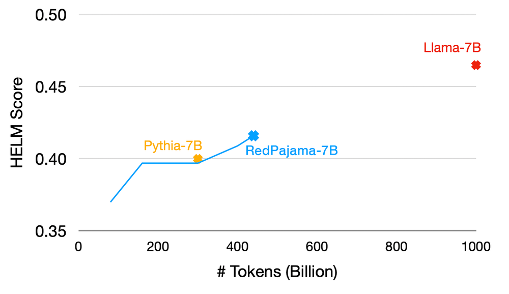
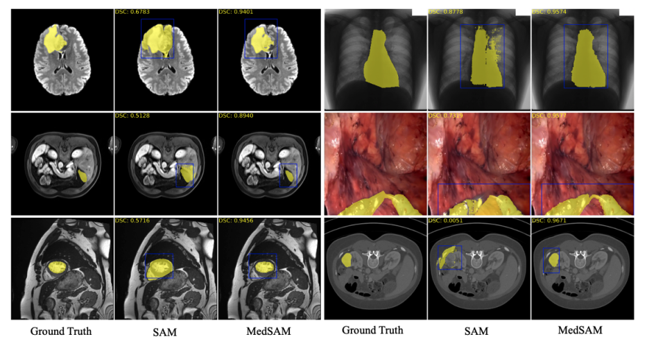
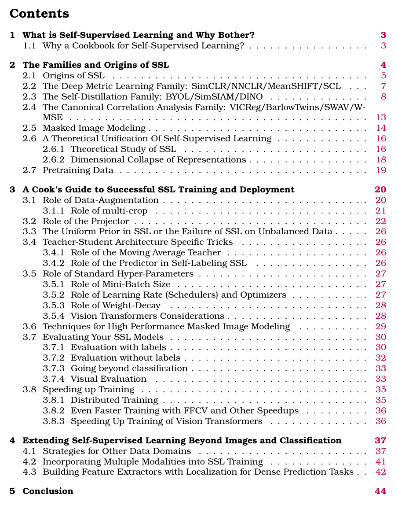
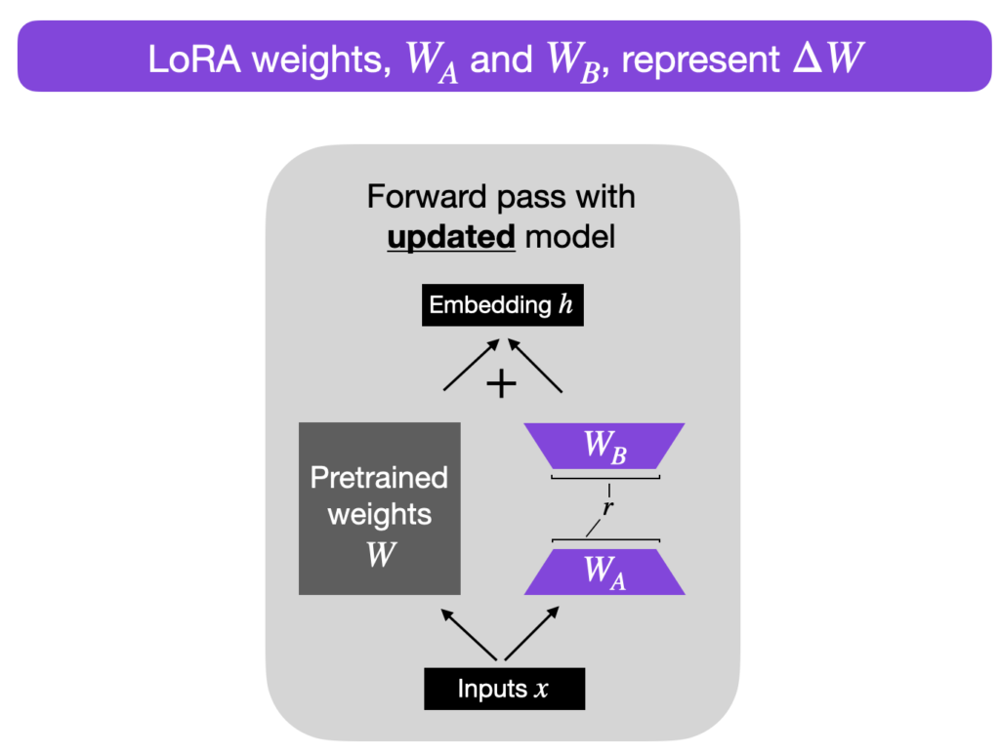

1 Introduction
If I am allowed to be a little dramatic, let me present to you the start of a new newsletter called “Ahead of Times”.
As the title suggests, the idea is to stay ahead of the curve. I personally strive my best to keep up to date with the latest research and advancements in the field of AI. As part of this newsletter I wish to take you along on that journey with me. Are you in?
1.1 What does the image signify?
Since the inception of Neural Nets in 2012 by the godfather of AI - Geoffrey Hinton, a lot has changed in terms of our capabilities as a human race to process unstructured data - specifically images and text.
This is even more apparent and visible with the release of chatbots such as ChatGPT with colleagues and employees from different fields (not particularly software engineers) utilising the tool in their day to day work.
In some ways we could say “The world of AI is on fire and changing very rapidly”.
“Ahead of Times” is meant to serve as a newsletter in this “times of change” to provide you with the latest news and updates by cutting through the noise & help you steer away from TikTok inspired influencers who write for publicity.
1.2 Public commitments
As the author of “Ahead of Times”, I publicly commit to:
- Providing a fair assessment of the latest technologies by trying them out myself.
- Being regular in providing you up to date information.
- Provide code examples and snippets where necessary.
- A “hands on” practical approach rather than going deep into mathematics/theory.
- Communicate clearly if there are times when I am not able to release the newsletter.
- Open to feedback.
- Promise to not spread misinformation, not be inspired by the “click bait” ideology.
- Continue writing the newsletter even if I am the only reader, trust me, it helps when you note things down in writing.
With the introductions and some public commitments out of the way, let’s get started with some key updates between “April 24, 2023 - April 30, 2023”.
2 April 24, 2023 - April 30, 2023: Key Updates
2.1 Stability AI releases DeepFloyd IF
The theme image for this newsletter was also generated using this model. You can try it out yourself here.
On April 28, 2023, Stability AI announced the research release of DeepFloyd IF, a powerful text-to-image cascaded pixel diffusion model.
Read more about the release on their official blog here.
2.2 RedPajama training progress at 440 billion tokens
What is RedPajama? Why is this relevant or important?
From the RedPajama announcement post,
Foundation models such as GPT-4 have driven rapid improvement in AI. However, the most powerful models are closed commercial models or only partially open. RedPajama is a project to create a set of leading, fully open-source models.
Remember “LLaMA” (Touvron et al. (2023))? Large language models of varying sizes between 7B to 65B released by Meta trained on trillions of tokens on publicly available datasets?
Well, as great as it may be, The original LLaMA code is GPL licensed which means any project using it must also be released under GPL. What does this mean? This “taints” any other code and prevents meaningful academic and commercial use. You also have to apply for access to LLaMA weights making them inaccessible. I have personally been waiting a few weeks and never heard back from Meta.
So why is this RedPajama project important? Quoting directly from their blog,
Our goal is to train the LLaMA suite of models and make them available under a permissive open-source license so they can be used as a foundation for research and commercial applications.
Great, right?!
The RedPajama dataset is available on HuggingFace and can be downloaded from here. All pre-processing and quality filters are open soourced here!
As part of the announcement on April 24, 2023, Together announced:
At 440 billion tokens, we now have a model checkpoint that is better than Pythia-7B (0.416 HELM vs. 0.400 HELM) and StableLM-7B (0.283 HELM).
Basically, in simpler terms, they conducted a training run with exactly the same model architecture and tokenizer as Pythia-7B (Biderman et al. (2023)), a well-regarded and fully open model from EleutherAI trained on the Pile (originally released by EleutherAI in 2020).

2.3 Segment Anything in Medical Images
Remember Segment Anything Model from Meta?
Try out the Demo for SAM here. In the video that we see above, the model does a great job at segmenting people and vehicles in the image I provided to it. It did miss however some tiny details, but, hey, that’s okay for a zero shot model performing segmentation!
From the Segment Anything in Medical Images, also called MedSAM (Ma and Wang (2023)),
MedSAM, is the first attempt at extending the success of SAM to medical images, with the goal of creating a universal tool for the segmentation of various medical targets.
You can try out the models in the offical GitHub Repository here.
I have personally not tried MedSAM, but if you do, feel free to share your results with me at (amaarora?).

2.4 A Cookbook of Self-Supervised Learning
From “Self-supervised learning: The dark matter of intelligence”:
Supervised learning is a bottleneck for building more intelligent generalist models that can do multiple tasks and acquire new skills without massive amounts of labeled data. Practically speaking, it’s impossible to label everything in the world.
Self-supervised learning enables AI systems to learn from orders of magnitude more data, which is important to recognize and understand patterns of more subtle, less common representations of the world.
Last week, Yann LeCun shared “A Cookbook of Self-Supervised Learning” on Twitter.

Why a Cookbook for Self-Supervised Learning?
While many components of SSL are familiar to researchers, successfully training a SSL method involves a dizzying set of choices from the pretext tasks to training hyperparameters. SSL research has a high barrier to entry due to (i) its computational cost, (ii) the absence of fully transparent papers detailing the intricate implementations required to fully enable SSL’s potential, and (iii) the absence of a unified vocabulary and theoretical view of SSL.
The above cookbook provides a comprehensive analysis of SSL, hyperparameter tuning, metric learning methods such as SIMCLR (Chen et al. (2020)), evaluation and also deployment!
2.5 New ways to manage your data in ChatGPT
ChatGPT users can now turn off chat history, allowing you to choose which conversations can be used to train OpenAI’s models.
Announced on April 25, 2023, OpenAI has introduced the ability to turn off Chat History in ChatGPT.
This is particularly useful for sharing code snippets related to private and confidential code sources.
2.6 Parameter-Efficient LLM Finetuning With Low-Rank Adaptation (LoRA)
As mentioned in Section 1, I will also be sharing helpful tutorials as part of the newsletter.
One such amazing tutorial released last week by Sebastian Raschka showcases how to finetuning Large Language Models using a technique called LoRA (Hu et al. (2021)).

What I particularly liked about this blog post were the illustrative images matching pseudo PyTorch code. This is an opportunity for someone to build on top of this tutorial and showcase LoRA with complete working PyTorch code from scratch. :)
You can find the tutorial shared by Sebastian Raschka here.
2.7 Replit’s From-Scratch Trained Code Complete model
Before we begin, what is Replit? And why is this relevant?
Replit is the newest AI unicorn, and they announced on April 28, 2023 that they’ve raised nearly $100M and are valued at $1.16B!
Also, at Developer Day, Replit announced:
- Production-grade Deployments straight from IDE
- A more powerful Workspace
- Secure Workspace Extensions
- Replit’s From-Scratch Trained Code Complete model
The one I am most interested in, is the open source replacement for Codex, which Replit has termed “CodeGen”!
Some folks have shared their reviews on CodeGen:
Despite the recent hype around Replit's new model, it isn't actually the best open-source code model out there
— Aman Sanger ((amanrsanger?)) April 26, 2023
In fact, it's not even the best 3-billion parameter code model
That title belongs to Microsoft's MIM-2.7B…
And it was trained on 2x fewer tokens! pic.twitter.com/PiE8NpG5Lc
For further reading:
There is also this really cool interview with Replit co-founder Amjad Masad by Dan Shipper.
2.8 Conclusion
This brings us to the end of our very first issue of the Newsletter!
If you found it helpful, consider subscribing to the blog. You can also buy me a coffee here.
Thank you for your time! See you next week on Monday at 9am AEST!